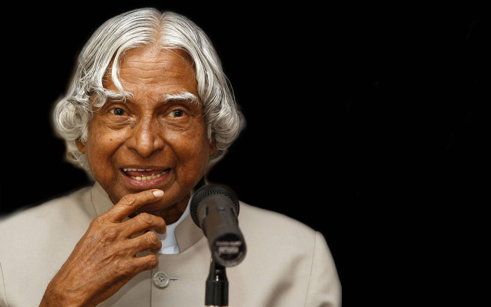

Biography
Dr. A. P. J. Abdul Kalam was an Indian aerospace scientist and the 11th President of India. He was born on 15 October 1931 in Rameswaram, Tamil Nadu.
He played an important role in India's space and missile development programmes. He was popularly known as the "Missile Man of India".
Dr. Kalam was also a teacher, author and inspirational speaker who encouraged students to dream big and work hard.
Major Achievements
- Worked with ISRO and India's space programme.
- Played an important role in India's missile development programme.
- Served as the 11th President of India from 2002 to 2007.
- Received the Bharat Ratna in 1997.
- Inspired millions of students through his books and speeches.
Life Timeline
1931
Born on 15 October in Rameswaram, Tamil Nadu.
1960s
Began working with India's space and defence programmes.
1980
The SLV-III successfully placed the Rohini satellite into orbit.
2002
Became the 11th President of India.
2015
Passed away on 27 July while delivering a lecture at IIM Shillong.